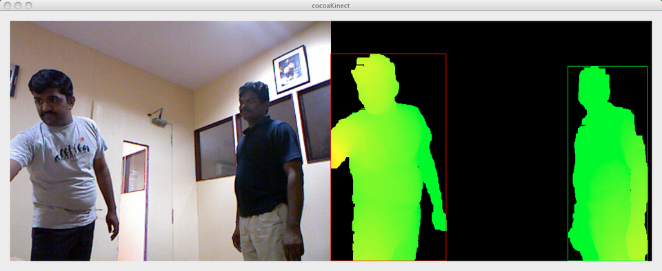

Game developmentRay Tracing and more into Computer GraphicsIts been a long time since I wrote anything here. Been busy
Game developmentValidating Yourself as a Good Game DeveloperDo you hate anything other than traditional CPP? Even after using a
AI-ContestGoogle AI Challenge Ants 2011 - Post MortemAs a 3 week hard work and sleepless nights, I took the
hackingComplex Gesture Recognition using KinectLike I said earlier, I was working on some complex gesture recognition
kinectClean Background removal with blob detectionYes, am a little ahead in the background removal. I have now
Blob Detection in KinectAfter background removal, I've now completed the blob detection algorithm. After reading
hackingBackground Removal for Kinect Depth dataI am wondering if am atleast 10% towards completion of the skeletonization
hackingSkeleton detection code for KinectAs I promised earlier, I am now working on a Skeleton detection
kinectControlling TV and Set-top box with KinectI finally made it work. Detected skeleton using OpenNI and detected some